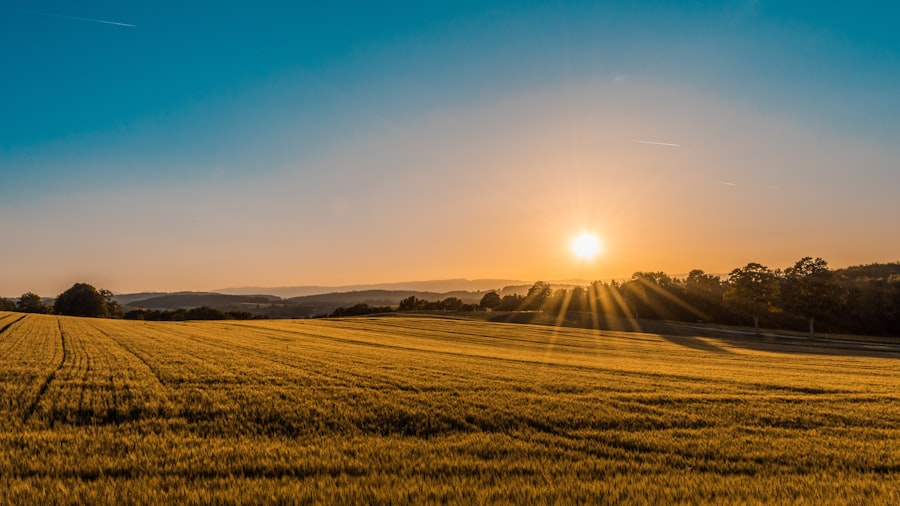
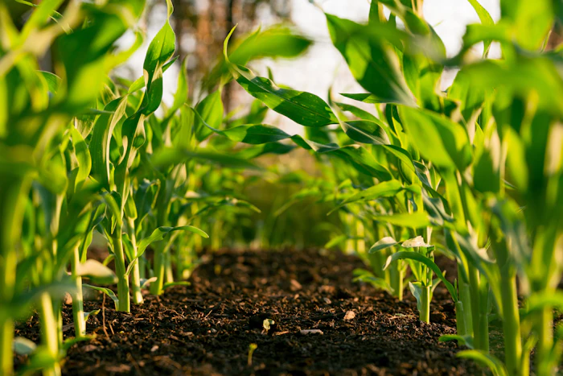

Field monitoring
Track active plots, crop stages, moisture levels, weather alerts, and daily field notes from a single dashboard view.
- Field health overview
- Moisture and pest alerts
- Crop-stage reminders
Organic farming - Future-ready agritech
AgriNova pairs the warmth of real farm life with sharp analytics - track soil, weather, and yield from one colorful dashboard built for growers.



Why growers choose AgriNova
Watch yield, soil moisture, and weather update in real time, all from one screen.
Tailored irrigation and nutrition plans for every crop variety you grow.
Stay a step ahead of rainfall, frost, and heat with field-level forecasting.
Explore the experience
See your farm's yield, soil, and water analytics at a glance.
Preview interactive farm experiences and smart agriculture tools.
Explore consultations, onboarding, and long-term farm support.
Browse practical products and tools built for day-to-day farm work.
Read seasonal advice, field stories, and sustainable farming updates.
Access support pages that guide visitors through the site with ease.
Sign in to continue exploring your farm dashboard and account details.
Farm command center
Each part of AgriNova is built around a practical farm workflow: observe the field, plan the work, protect resources, prepare harvest, and connect with buyers.
Track active plots, crop stages, moisture levels, weather alerts, and daily field notes from a single dashboard view.
Plan sowing, irrigation, fertilization, pruning, and harvest work with clear seasonal schedules for each crop type.
Compare water usage across fields and identify where drip cycles, pump timing, or mulching can reduce waste.
Prepare produce for sale with quality checks, storage guidance, local demand signals, and dispatch planning.
Use blogs, stories, demos, and galleries to explain sustainable practices and build trust with visitors.
Daily workflow
AgriNova organizes the day around the information a grower actually needs. Start with alerts, inspect priority fields, update completed tasks, then review market and weather conditions before the next work cycle.
The result is a site that feels useful beyond the first visit: it can support education, product discovery, service inquiries, and dashboard-led farm management.
Seasonal process
Review soil condition, water availability, weather risk, and market demand before choosing the next crop cycle.
Use dashboard signals, crop notes, and task reminders to keep irrigation, nutrition, and pest checks on schedule.
Plan grading, packing, storage, transport, and buyer communication so harvest value is protected.
Impact areas
Field status, tasks, services, products, and learning content are arranged so farmers can find the next action quickly.
Service pages, demos, and dashboard summaries help teams align on responsibilities before the season gets busy.
Gallery, stories, testimonials, and market sections help visitors understand quality, process, and purpose.
Jump into the dashboard and watch your fields, water use, and yield trends come to life.
Login to open dashboard